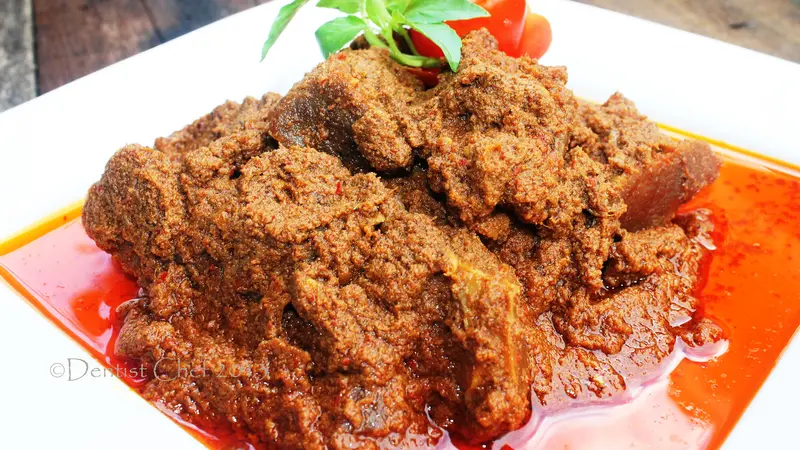

Rendang

The picture of rendang that has ready to eat
First we need to prepare the ingredient in the market. it is bery easy to find. if you are confuse and feeling hard to choose manually the ingredient, you always have a choice to just say toward the shopekeeper in order to obtain one package of ingredient of rendang. Then you will be buy all of the finished ingredient to make rendang. This is easy way but you cannot experience to cook rendang manually woth your own recipe.
ingredients
- five hundred gram of cow meat
- One stem of serai geprek
- Three leaves of orange's plant
- Three leaves of salam's plant
- One part of Lengkuas geprek
- Two cm of kayu manis
- One spoon tea of gula merah
- One spoon tea of kaldu sapi and salt
- One spoon tea of jintan powder
- One spoon tea of merica powder
- Jeruk nipis
- five hundred ml santan of half coconut
- Four part of white garlic
- Six red garlic
- Two kemiri fruit
- Half tea spoon of ketumbar
- Three big red chilli that has set aside its seed
- Two cm of kunyit
- Three cm of jahe
How to make rendang
- Wash up the cow meat until it clean. Then add juice of jeruk nipis and wash the cow meat again.
- Polish the seasoning then cook it with serai, orange's leaves, salam leaves, kayu manis, and lengkuas until it hard-boiled
- Add the cow meat, stir it, and add santan. cook with small fire and stir it every minute
- Add salt, kaldu, merica, jintan, and gula merah. Stay put until the seasoning absorbed by the meat and it has less water than before
- Taste it, lift it, and rendang is ready to eat
Reference
Liputan 6 accessed 13 January 2024